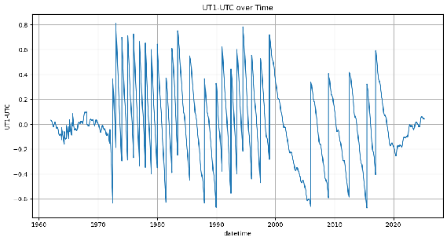
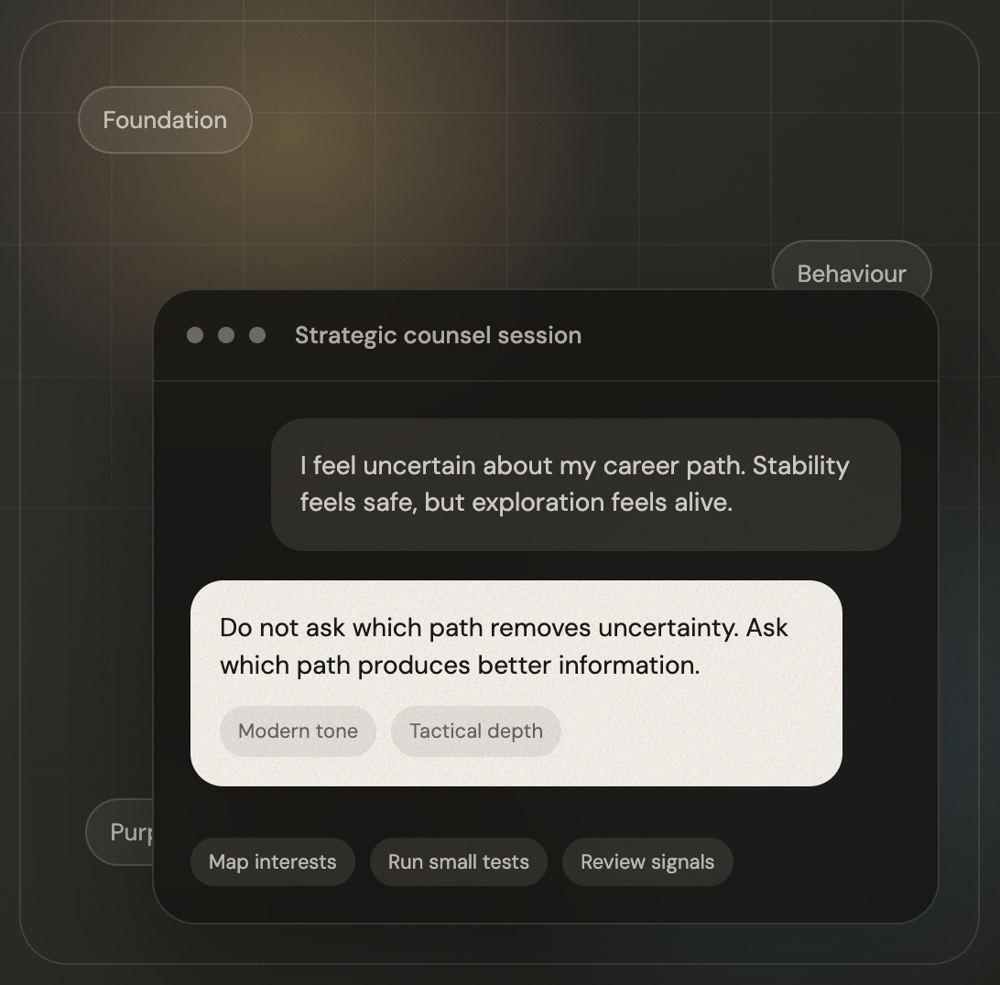

Garage
Everything I've built, tinkered with, explored, or shipped while following an interesting thread.

Brand Campaign
boAt Brand Campaign
A visual campaign direction exploring stronger product mood, sharper art direction, and youth-focused energy.

Branding and Interface
Lagrange
A composed identity system for an AI tool, balancing technical clarity with a warmer product presence.

Gamified Learning
Adagrad Learning
An education experience shaped around playful progress, clearer feedback, and more motivating practice loops.

Streamlit Application
Cloud Profiler
A small analytical tool for profiling cloud usage patterns and making infrastructure decisions easier to scan.
NDA Case Study
DocQnA AI Assistant
A protected UX case study for an AI assistant that generates quantitative data from interview transcripts.

Product Design Internship
CFM Device Switcher
A CFM survey builder improvement for responsive previewing and explicit mobile media alignment control.

Research Dashboard
Atomic Clock Live Monitor
A monitoring concept for timekeeping data, designed to make technical signals readable at a glance.

Forecasting Research
UT1-UTC Prediction
A time-series study comparing LSTM, TimeGPT, and SARIMA for forecasting Earth-rotation drift and leap-second signals.

DCOE, IISc Bengaluru
Visuals and UI
A design internship project exploring visual systems and interface improvements for an academic product experience.

AI Web App
Greene's Counsel
A focused AI reading companion that turns dense strategic writing into conversational, usable guidance.